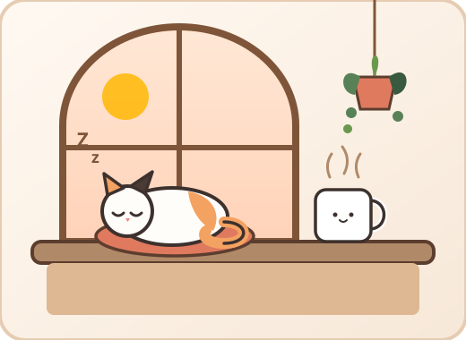
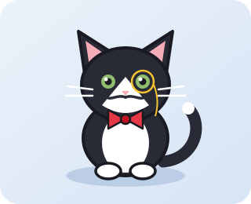

Chief Nap Officer
Chief Nap Officer
Mochi
Will happily curl up next to your laptop if you share the warmth of your charger.

They terrible at making espresso, so we let them nap on the cushions instead.
Chief Nap Officer
Will happily curl up next to your laptop if you share the warmth of your charger.

Quality InspectorSniffs every oat milk latte from a polite distance and approves with a slow blink.
Address: 42 Sunbeam Alley, Cozy Quarter
Hours: Tue – Sun: 10:00 AM – 7:00 PM (Closed Mondays for extra cat naps)
Entry: $8 / hour (includes one free drip coffee or tea!)